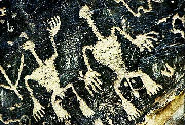

This project lab or module serves as a student forum for exploring the world of lost ancient arts and technologies. Student projects range from the hands-on experimental replication of stone tools and weaponry to the exploration of technical skills and inventive thinking inherent in the scientific, technological, and medical traditions of non-Western cultures and civilizations. Methods devised in the field of experimental archaeology frame the potential approaches undertaken by students working with the ancient technologies and cultures group.